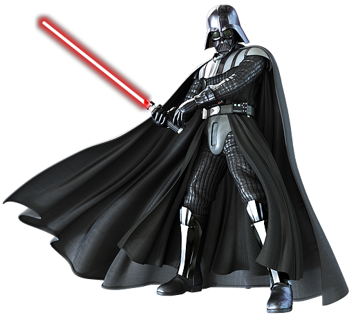
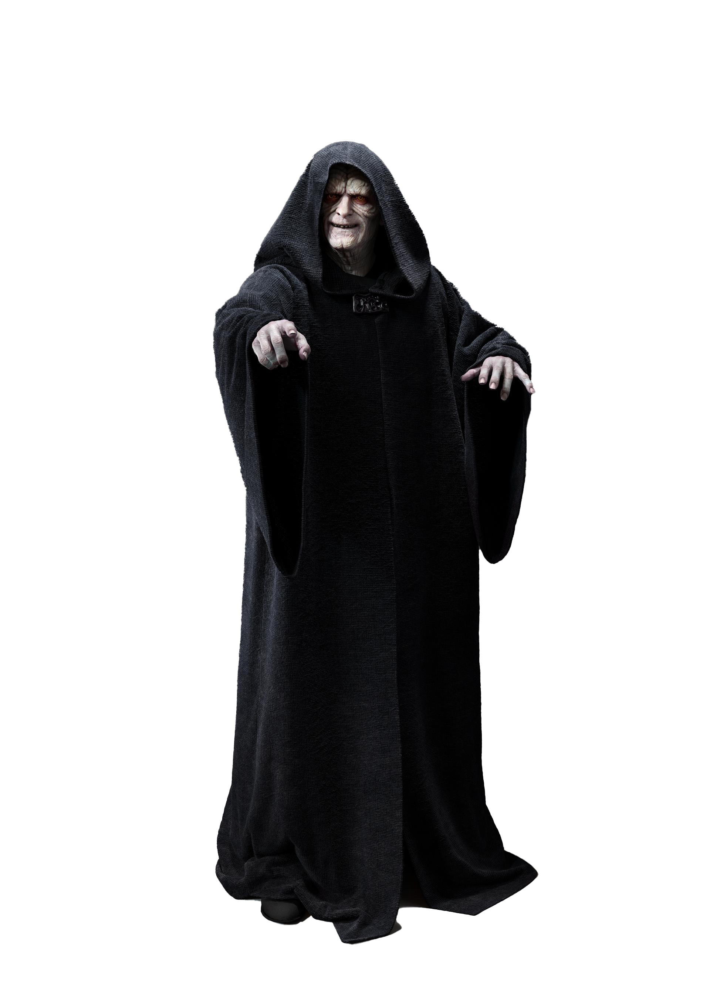
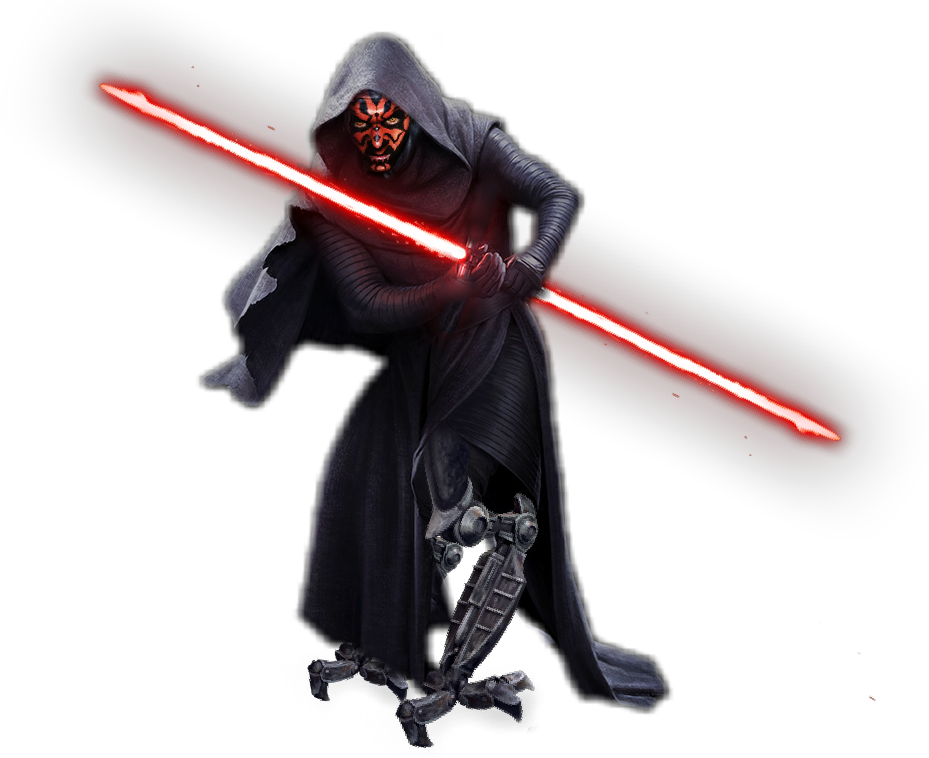
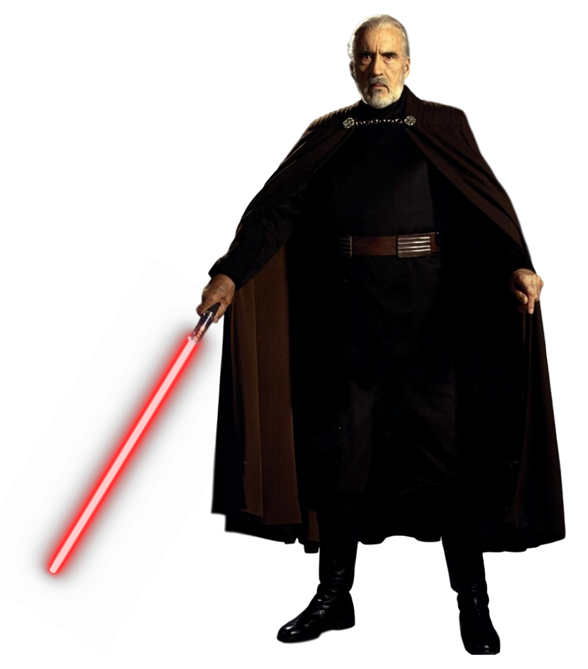

-
darth vader
HP 999
descrição
outrora o heróico cavaleiro jedi chamado anakin skywalker, darth vader foi seduzido pelo lado negro da força. para sempre marcado por sua derrota em mustafar, vader foi transformado em um sith lord ciberneticamente aprimorado. no alvorecer do império, vader liderou a erradicação da ordem jedi pelo império e a busca por sobreviventes. ele permaneceu a serviço do imperador - o malvado darth sidious - por décadas, fazendo cumprir a vontade de seu mestre e tentando esmagar a aliança rebelde e outros detratores. mas ainda havia algo bom nele...
-
darth sidious
HP 900
descrição
o lado negro da força é um caminho para muitas habilidades que alguns consideram não naturais, e sheev palpatine é o mais infame seguidor de suas doutrinas. ardiloso, poderoso e malévolo, darth sidious restaurou os sith e destruiu a ordem jedi. vivendo uma vida dupla, ele também era palpatine, um senador de naboo e uma ameaça fantasma. ele manipulou o sistema político da república galáctica até ser nomeado chanceler supremo - e eventualmente imperador - e governou a galáxia através do medo e da tirania. a galáxia se alegrou quando ele morreu na batalha de endor, mas sidious enganou a morte e planejou pacientemente um retorno ao poder.
-
darth maul
HP 850
descrição
um mortal e ágil lorde sith treinado pelo malvado darth sidious, darth maul era um guerreiro formidável e um mentor ardiloso. ele empunhava um intimidante sabre de luz de lâmina dupla e lutava com uma ferocidade ameaçadora. embora ele tenha caído em batalha contra obi-wan kenobi, o zabrak de dathomir provaria ser muito mais difícil de destruir do que se acreditava originalmente.
-
darth tyrannus
HP 890
Descrição
conde dookan era um lorde sith ameaçador e figura central nas guerras clônicas. outrora um jedi - treinado por yoda - ele se desiludiu com a ordem jedi e ansiava por mais poder. dookan voluntariamente deixou o lado da luz para trás e se tornou o discípulo do lado negro de darth sidious, assumindo o nome secreto de darth tyranus e liderando o exército separatista. dooku avançou na trama secreta de sidious para dominar a galáxia, mas esqueceu que a traição é a natureza dos sith.